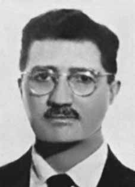

Joaquim
Câmara
Ferreira
BIOGRAFIA
Comandante da Ação Libertadora Nacional (ALN), conhecido como “Toledo” e “Velho”. Entrou para o Partido Comunista Brasileiro (PCB) em 1933. Jornalista, dirigiu diversos periódicos do partido e, em 1937, quando Getúlio Vargas instaurou o Estado Novo, passou a atuar de forma clandestina. Esteve por vários anos preso, tendo sido torturado pelo Departamento de Ordem Política e Social (Dops) paulista. Foi submetido a pau de arara, palmatória, afogamentos. Também enfiaram farpas de bambu embaixo de suas unhas, que foram definitivamente arrancadas.
Durante as décadas de 1940 e 1950 esteve à frente da imprensa partidária em São Paulo. Depois da anistia, em 1945, e da legalidade do PCB, Câmara se tornou um dos principais dirigentes do partido em São Paulo. Em 1948, viajou para a União Soviética para realizar estudos sobre política.
Em 1964, foi preso pelos órgãos policiais por realizar uma palestra para operários em São Bernardo do Campo, sendo libertado pouco depois. Foi condenado pela ditadura militar a dois anos de reclusão. Em 1967, foi um dos principais signatários do “Manifesto do Agrupamento Comunista de São Paulo” – que se tornou o embrião da ALN.
Era considerado o número dois da ALN e participou diretamente do sequestro do embaixador norte-americano Charles Burke Elbrick, em setembro de 1969, que garantiu a libertação de 15 presos políticos. Em novembro de 1969, quando Carlos Marighella foi assassinado, encontrava-se em Cuba. Retornou ao Brasil e assumiu o comando da organização.
Foi preso no dia 23 de outubro de 1970, na Avenida Lavandisca, em São Paulo. Do local de sua prisão, Câmara foi levado, já sob tortura, para o sítio clandestino “31 de março”, utilizado pelo delegado Sérgio Fleury. No sítio, continuou sendo torturado, morrendo algumas horas após sua prisão. A presa política Maria de Lourdes Rego Melo é testemunha de que Joaquim Câmara Ferreira foi preso vivo e levado ao sítio clandestino do delegado, e que a sua morte se deu como consequência da violência das torturas.
Commander of the National Liberation Action (ALN), known as “Toledo” and “Velho”. He joined the Brazilian Communist Party (PCB) in 1933. A journalist, he directed several of the party's periodicals and, in 1937, when Getúlio Vargas established the Estado Novo, he began to work clandestinely. He was imprisoned for several years, having been tortured by the Department of Political and Social Order (Dops) in São Paulo. He was subjected to sticks, paddles and drowning. They also stuck bamboo splinters under his nails, which were definitely pulled out.
During the 1940s and 1950s he was at the head of the party press in São Paulo. After the amnesty in 1945 and the legality of the PCB, Câmara became one of the party's main leaders in São Paulo. In 1948, he traveled to the Soviet Union to study politics.
In 1964, he was arrested by police agencies for giving a lecture to workers in São Bernardo do Campo, being released shortly afterwards. He was sentenced by the military dictatorship to two years in prison. In 1967, he was one of the main signatories of the “Manifesto of the Communist Group of São Paulo” – which became the embryo of the ALN.
He was considered number two in the ALN and directly participated in the kidnapping of US ambassador Charles Burke Elbrick, in September 1969, which guaranteed the release of 15 political prisoners. In November 1969, when Carlos Marighella was murdered, he was in Cuba. He returned to Brazil and took charge of the organization.
He was arrested on October 23, 1970, on Avenida Lavandisca, in São Paulo. From the place of his arrest, Câmara was taken, already under torture, to the clandestine site “31 de Março”, used by police chief Sérgio Fleury. At the farm, he continued to be tortured, dying a few hours after his arrest. Political prisoner Maria de Lourdes Rego Melo is a witness that Joaquim Câmara Ferreira was arrested alive and taken to the delegate's clandestine site, and that his death occurred as a result of the violence of torture.
Comandante de Acción de Liberación Nacional (ALN), conocido como “Toledo” y “Velho”. Ingresó al Partido Comunista Brasileño (PCB) en 1933. Periodista, dirigió varios periódicos del partido y, en 1937, cuando Getúlio Vargas estableció el Estado Novo, comenzó a trabajar clandestinamente. Estuvo encarcelado durante varios años, tras haber sido torturado por el Departamento de Orden Político y Social (Dops) de São Paulo. Fue sometido a palos, remos y ahogado. También le clavaron astillas de bambú debajo de las uñas, que definitivamente fueron arrancadas.
Durante las décadas de 1940 y 1950 estuvo al frente de la prensa del partido en São Paulo. Después de la amnistía de 1945 y la legalidad del PCB, Câmara se convirtió en uno de los principales líderes del partido en São Paulo. En 1948 viajó a la Unión Soviética para estudiar política.
En 1964, fue detenido por agentes policiales por dar una conferencia a trabajadores en São Bernardo do Campo, siendo liberado poco después. Fue condenado por la dictadura militar a dos años de prisión. En 1967, fue uno de los principales firmantes del “Manifiesto del Grupo Comunista de São Paulo”, que se convirtió en el embrión de la ALN.
Fue considerado el número dos de la ALN y participó directamente en el secuestro del embajador estadounidense Charles Burke Elbrick, en septiembre de 1969, que garantizó la liberación de 15 presos políticos. En noviembre de 1969, cuando asesinaron a Carlos Marighella, éste se encontraba en Cuba. Regresó a Brasil y se hizo cargo de la organización.
Fue detenido el 23 de octubre de 1970, en la Avenida Lavandisca, en São Paulo. Desde el lugar de su detención, Câmara fue trasladado, ya bajo tortura, al sitio clandestino “31 de Março”, utilizado por el jefe de policía Sérgio Fleury. En la finca continuó siendo torturado y falleció pocas horas después de su arresto. La presa política María de Lourdes Rego Melo es testigo de que Joaquim Câmara Ferreira fue detenido vivo y trasladado al sitio clandestino del delegado, y que su muerte se produjo como consecuencia de la violencia de las torturas.
CIRCUNSTÂNCIAS DA MORTE
Joaquim Câmara Ferreira foi detido por agentes do Departamento Estadual de Ordem Política e Social de São Paulo (DOPS-SP), chefiados pelo delegado Sérgio Fernando Paranhos Fleury, em 23 de outubro de 1970, por volta das 19 horas. As investigações que conduziram à prisão de Joaquim começaram com a detenção de José da Silva Tavares, militante da ALN que utilizava o codinome “Vitor”, em Belém (PA). A partir das informações obtidas com Tavares, os órgãos de segurança e informações montaram a emboscada que resultou na prisão de Joaquim. “Toledo” foi preso na avenida Lavandisca, em São Paulo (SP), quando compareceu ao ponto onde encontraria com Maria de Lourdes Rego Melo, presa junto com Maurício Segall na tarde daquele mesmo dia. Joaquim resistiu aos policiais e chegou a ferir alguns dos agentes envolvidos na ação. Ele teria tentado alcançar, sem sucesso, uma cápsula de cianureto que portava consigo com o objetivo de não ser preso vivo. Desde que fora torturado, no período do Estado Novo, Joaquim afirmava que não se deixaria prender novamente. Dominado pelo grande número de agentes envolvidos na operação, Joaquim foi transportado para um centro clandestino de detenção e tortura que ficou conhecido como “Sítio 31 de março” ou “Sítio do Fleury”, nos arredores de São Paulo. Depois de algumas horas de interrogatório sob tortura, morreu no mesmo dia 23 de outubro. Testemunhas presentes no sítio afirmam que um médico chegou a ser chamado para reanimar Joaquim, com o fim de continuar o interrogatório. Esta versão é confirmada pelo depoimento de Maurício Segall para a CEMDP, realizado em 15 de abril de 1996: No sítio, bem primitivo, ao qual chegamos de olhos vendados, a iluminação era de velas, pois não havia luz elétrica. O sítio aparentemente tinha dois quartos, uma sala/cozinha e um banheiro. Os choques elétricos aplicados no pau-de-arara eram gerados num aparelho, acionado por manivela manual. Já estava lá sendo torturado Viriato, recém-chegado de Cuba… Tudo que se passava num dos cômodos, mesmo com porta fechada, se ouvia nos demais […]. Quando fui pendurado, o interrogador era o próprio Fleury […]. Em meio da minha tortura no pau-de-arara, já de noite, que vinha durando algum tempo, houve uma agitação coletiva, colocaram uma espécie de apoio nos meus quadris, de forma que fiquei só parcialmente pendurado e a maioria dos policiais deixou às pressas o sítio, deixando apenas dois ou três para trás. Não sei quanto tempo isto durou (no mínimo 2 horas) mas, a um certo momento fui tirado com as pernas totalmente inermes do pau-de-arara só podendo andar amparado e fiquei sentado na sala com uma venda nos olhos, mas que deixava uma fresta na parte de baixo. Logo depois ouvi uma pessoa chegando, arfando desesperadamente, com falta de ar, com sintomas muito parecidos com ataque cardíaco (que eu conhecia, pois eram semelhantes àqueles do meu pai, por ocasião de sua morte). Esta pessoa foi levada para o quarto que tinha a cama e não o pau-de-arara. Fiquei sabendo que era Toledo pelos comentários que vinham sendo feitos pelos policiais. Havia muita agitação entre eles e Toledo não parava de arfar. A um certo momento, vi pela fresta inferior da venda dos olhos, passarem duas pernas vestidas de branco calçadas com sapatos brancos. Não havia dúvida que era um médico. Logo depois, Toledo parava de arfar. Muito rapidamente o acampamento foi levantado e fomos levados de olhos vendados para o DOPS e a seguir para a OBAN […]. Ouvi diversas manifestações de irritação do pessoal da OBAN com o pessoal do Fleury devido à morte de Toledo sem que eles pudessem tê-lo interrogado também […]. Soube depois também que o fato de Maria, Viriato e eu termos sobrevivido ao sítio se deveu, em boa parte, à morte prematura de Toledo.i O processo de reparação movido junto à CEMDP pela família de Joaquim lista, ainda, outros documentos que contribuem para elucidar as circunstâncias nas quais se deu sua morte. O “Relatório Especial de Informação nº 7/70”, datado de 3 de novembro de 1970, assinado pelo general Ernani Ayrosa da Silva, chefe do Estado Maior do II Exército, afirma que […] na sexta-feira, dia 23, às 13.30 horas, na rua Humberto I, um elemento „cobriu‟ „ponto‟ com BAIXINHA (MARIA DE LOURDES REGO MELO). Às 14.00 horas, próximo à rua Humberto I, BAIXINHA foi presa juntamente com MATIAS (MAURÍCIO SEGAL), que levava Cr$3.500,00 para ser entregue a TOLEDO. Em poder daquela foi encontrado um bilhete manuscrito por TOLEDO, que deveria ser entregue e RUI com o objetivo de marcar dois “pontos” com TORRES (VIRIATO XAVIER DE MELLO FILHO) e KALIL (ANTÔNIO CARLOS BICALHO LANA), o primeiro a se realizar na Rua Lavandisca, entre os números 400 e 600, às 19.30 horas, e o segundo na Rua Bentevi, em toda a sua extensão às 20:00 horas. (f) Efetuado o cerco da área conseguiu-se a captura de TOLEDO (JOAQUIM CÂMARA FERREIRA), após luta corporal desesperada do epigrafado reagindo aos policiais. Nas imediações foi preso também TORRES. (g) Quando estava sendo submetido a interrogatório, TOLEDO foi acometido de crise cardíaca, que lhe ocasionou a morte, apesar de assistência médica a que foi submetido.ii A versão dos órgãos de segurança sobre a morte de Joaquim consta de um telex encontrado no DOPS de Pernambuco, proveniente do Centro de Informações do Exército do Rio de Janeiro (CIE-RJ). O documento, também constante no processo movido junto à CEMDP e no Relatório Parcial de Pesquisa da CNV, afirma que, mesmo desarmado, Joaquim tentou resistir à prisão, causando ferimentos a diversos agentes. Em consequência, seu coração não resistiu aos combates corporais e o militante morreu no local de sua prisão. O laudo de exame necroscópico, assinado pelos médicos-legistas Mário Santalúcia e Paulo Augusto de Q. Rocha, atesta que Joaquim morreu em decorrência de “congestão e edema pulmonar no decurso do miocárdio e esclerose com hipertrofia ventricular esquerda”. O mesmo laudo afirma ainda que […] dos elementos observados no presente exame necroscópico, infere-se que o examinado era portador de alterações patológicas dos aparelhos circulatório, digestivo e urinário, processos que, embora comprometessem as suas condições de Higidez, eram compatíveis com a vida, não justificando o êxito letal inopinado. A causa determinante da morte radica no desencadeamento de um processo de congestão e edema agudo dos pulmões, que é a invasão dos alvéolos e do tecido pulmonar interstical pelo extravasamento de líquido seroso dos capilares pulmonares. Joaquim Câmara Ferreira foi sepultado por sua família no Cemitério da Consolação, na cidade de São Paulo (SP).
Joaquim Câmara Ferreira was detained by agents from the São Paulo State Department of Political and Social Order (DOPS-SP), led by delegate Sérgio Fernando Paranhos Fleury, on October 23, 1970, around 7 pm. The investigations that led to Joaquim's arrest began with the arrest of José da Silva Tavares, an ALN activist who used the code name “Vitor”, in Belém (PA). Based on the information obtained from Tavares, security and intelligence agencies set up the ambush that resulted in Joaquim's arrest. “Toledo” was arrested on Avenida Lavandisca, in São Paulo (SP), when he arrived at the point where he would meet Maria de Lourdes Rego Melo, arrested together with Maurício Segall on the afternoon of that same day. Joaquim resisted the police and even injured some of the agents involved in the action. He would have tried, unsuccessfully, to reach a cyanide capsule that he carried with him in order to avoid being taken alive. Since he was tortured during the Estado Novo period, Joaquim stated that he would not allow himself to be arrested again. Overwhelmed by the large number of agents involved in the operation, Joaquim was transported to a clandestine detention and torture center that became known as “Sítio 31 de Março” or “Sítio do Fleury”, on the outskirts of São Paulo. After a few hours of interrogation under torture, he died on October 23rd. Witnesses present at the site claim that a doctor was called to revive Joaquim, in order to continue the interrogation. This version is confirmed by Maurício Segall's statement to CEMDP, carried out on April 15, 1996: At the very primitive site, which we arrived at blindfolded, the lighting was with candles, as there was no electric light. The site apparently had two bedrooms, a living room/kitchen and a bathroom. The electric shocks applied to the pau-de-arara were generated in a device, activated by a manual crank. Viriato, who had recently arrived from Cuba, was already there being tortured… Everything that happened in one of the rooms, even with the door closed, could be heard in the others […]. When I was hanged, the interrogator was Fleury himself […]. In the middle of my torture on the pau-de-arara, at night, which had been lasting for some time, there was a collective commotion, they placed some kind of support on my hips, so that I was only partially hanging and most of the police officers hurriedly left the place, leaving only two or three behind. I don't know how long this lasted (at least 2 hours) but, at a certain point, I was taken off the stick with my legs completely helpless, only able to walk with support, and I was left sitting in the room with a blindfold over my eyes, but which left a gap at the bottom. Soon after, I heard a person arriving, panting desperately, short of breath, with symptoms very similar to a heart attack (which I knew, as they were similar to those of my father, at the time of his death). This person was taken to the room that had the bed and not the macaw stick. I found out it was Toledo from the comments that were being made by the police officers. There was a lot of agitation between them and Toledo couldn't stop panting. At a certain moment, I saw through the lower slit of the blindfold, two legs dressed in white and wearing white shoes pass by. There was no doubt he was a doctor. Soon after, Toledo stopped panting. Very quickly the camp was broken and we were taken blindfolded to the DOPS and then to the OBAN […]. I heard several expressions of irritation from OBAN staff towards Fleury's staff due to Toledo's death without them being able to interrogate him as well [...]. I also later learned that the fact that Maria, Viriato and I survived the siege was largely due to Toledo's premature death.i The reparation process filed with the CEMDP by Joaquim's family also lists other documents that help to elucidate the circumstances in which his death occurred. “Special Information Report No. 7/70”, dated November 3, 1970, signed by General Ernani Ayrosa da Silva, Chief of Staff of the Second Army, states that […] on Friday, the 23rd, at 1:30 pm, on Humberto I Street, an element „covered‟ „point‟ with BAIXINHA (MARIA DE LOURDES REGO MELO). 2:00 p.m., near Humberto I Street, BAIXINHA was arrested together with MATIAS (MAURÍCIO SEGAL), who was carrying Cr$3,500.00 to be delivered to TOLEDO. A note handwritten by TOLEDO was found in her possession, which was supposed to be delivered to RUI with the aim of scoring two “points” with TORRES (VIRIATO XAVIER DE MELLO FILHO) and KALIL (ANTÔNIO) CARLOS BICALHO LANA), the first to take place on Rua Lavandisca, between numbers 400 and 600, at 7:30 pm, and the second on Rua Bentevi, in its entirety at 8:00 pm (f) Once the area was surrounded, TOLEDO (JOAQUIM CÂMARA FERREIRA) was captured, after a desperate physical struggle by the person in question reacting to the police officers. TORRES was also arrested nearby. (g) When he was being interrogated, TOLEDO suffered a heart attack, which caused his death, despite the medical assistance he received.ii The security agencies' version of Joaquim's death is contained in a telex found at the Pernambuco DOPS, originating from the Rio de Janeiro Army Information Center (CIE-RJ). CNV, states that, even though he was unarmed, Joaquim tried to resist arrest, causing injuries to several agents. As a result, his heart could not resist the physical combat and the militant died at the scene of his arrest. left." The same report also states that [...] from the elements observed in the present necroscopic examination, it is inferred that the person examined had pathological changes in the circulatory, digestive and urinary systems, processes that, although compromising his health conditions, were compatible with life, not justifying the unexpected lethal outcome. The determining cause of death lies in the triggering of a process of congestion and acute edema of the lungs, which is the invasion of the alveoli and lung tissue interstical due to the leakage of serous fluid from the pulmonary capillaries. Joaquim Câmara Ferreira was buried by his family in the Consolação Cemetery, in the city of São Paulo (SP).
Joaquim Câmara Ferreira fue detenido por agentes del Departamento de Orden Político y Social del Estado de São Paulo (DOPS-SP), encabezados por el delegado Sérgio Fernando Paranhos Fleury, el 23 de octubre de 1970, alrededor de las 19 horas. Las investigaciones que llevaron a la detención de Joaquim comenzaron con la detención de José da Silva Tavares, militante de la ALN que utilizaba el nombre clave “Vitor”, en Belém (PA). A partir de la información obtenida de Tavares, organismos de seguridad e inteligencia montaron la emboscada que desembocó en la detención de Joaquim. “Toledo” fue detenido en la Avenida Lavandisca, en São Paulo (SP), cuando llegaba al punto donde se encontraría con María de Lourdes Rego Melo, detenida junto con Maurício Segall en la tarde de ese mismo día. Joaquim resistió a la policía e incluso hirió a algunos de los agentes implicados en la acción. Habría intentado, sin éxito, alcanzar una cápsula de cianuro que llevaba consigo para evitar que lo capturaran con vida. Como fue torturado durante el período del Estado Novo, Joaquim afirmó que no permitiría que lo arrestaran nuevamente. Abrumado por la gran cantidad de agentes involucrados en la operación, Joaquim fue trasladado a un centro clandestino de detención y tortura que pasó a ser conocido como “Sítio 31 de Março” o “Sítio do Fleury”, en las afueras de São Paulo. Tras unas horas de interrogatorio bajo tortura, murió el 23 de octubre. Testigos presentes en el lugar afirman que llamaron a un médico para reanimar a Joaquim, con el fin de continuar con el interrogatorio. Esta versión es confirmada por la declaración de Maurício Segall al CEMDP, realizada el 15 de abril de 1996: En el sitio muy primitivo, al que llegamos con los ojos vendados, la iluminación era con velas, ya que no había luz eléctrica. El sitio aparentemente tenía dos dormitorios, una sala de estar/cocina y un baño. Las descargas eléctricas aplicadas al pau-de-arara se generaban en un dispositivo activado por una manivela manual. Viriato, recién llegado de Cuba, ya estaba allí siendo torturado… Todo lo que pasaba en una de las habitaciones, incluso con la puerta cerrada, se escuchaba en las otras […]. Cuando me ahorcaron, el interrogador fue el propio Fleury […]. En medio de mi tortura en el pau-de-arara, por la noche, que se prolongaba desde hacía algún tiempo, hubo una conmoción colectiva, me colocaron una especie de soporte en las caderas, de modo que quedé sólo parcialmente colgado y la mayoría de los policías abandonaron apresuradamente el lugar, dejando solo a dos o tres atrás. No sé cuánto duró esto (al menos 2 horas) pero, en cierto momento, me bajaron del palo con las piernas completamente indefensas, solo podía caminar con apoyo, y me dejaron sentada en la habitación con los ojos vendados, pero lo que dejó un hueco en el fondo. Poco después escuché llegar a una persona, jadeando desesperadamente, sin aire, con síntomas muy parecidos a un infarto (que yo sabía, porque eran similares a los de mi padre, en el momento de su muerte). Esta persona fue llevada a la habitación que tenía la cama y no el palo de guacamaya. Supe que era Toledo por los comentarios que estaban haciendo los policías. Había mucha agitación entre ellos y Toledo no podía dejar de jadear. En cierto momento, vi por la rendija inferior de la venda pasar dos piernas vestidas de blanco y con zapatos blancos. No había duda de que era médico. Poco después, Toledo dejó de jadear. Muy rápidamente se desmanteló el campamento y nos llevaron con los ojos vendados al DOPS y luego al OBAN […]. Escuché varias expresiones de irritación del personal de la OBAN hacia el personal de Fleury por la muerte de Toledo sin que pudieran interrogarlo también [...]. También supe más tarde que el hecho de que María, Viriato y yo sobreviviéramos al asedio se debió en gran medida a la muerte prematura de Toledo.i El proceso de reparación presentado ante el CEMDP por la familia de Joaquim también enumera otros documentos que ayudan a dilucidar las circunstancias en las que ocurrió su muerte. “Informe Informativo Especial N° 7/70”, de 3 de noviembre de 1970, firmado por el General Ernani Ayrosa da Silva, Jefe de Estado Mayor del Segundo Ejército, refiere que […] el viernes 23, a las 13:30 horas, en la calle Humberto I, un elemento “cubrió” el “punto” con BAIXINHA (MARIA DE LOURDES REGO MELO). BAIXINHA fue arrestada junto con MATIAS (MAURÍCIO SEGAL), que llevaba Cr$ 3.500,00 para ser entregados a TOLEDO. Se encontró en su poder una nota manuscrita por TOLEDO, que debía ser entregada a la RUI con el objetivo de anotar dos “puntos” con TORRES (VIRIATO XAVIER DE MELLO FILHO) y KALIL (ANTÔNIO) CARLOS BICALHO LANA), los primeros en tener lugar. en Rua Lavandisca, entre los números 400 y 600, a las 19.30 horas, y el segundo en Rua Bentevi, en su totalidad a las 20.00 horas (f) Una vez cercada la zona, TOLEDO (JOAQUIM CÂMARA FERREIRA) fue capturado, tras un desesperado forcejeo físico del en cuestión ante los agentes policiales que también fueron detenidos en las inmediaciones (g) Cuando estaba siendo interrogado, TOLEDO sufrió un infarto. ataque, que provocó su muerte, a pesar de la asistencia médica que recibió.ii La versión de los organismos de seguridad sobre la muerte de Joaquim está contenida en un télex encontrado en el DOPS de Pernambuco, procedente del Centro de Información del Ejército de Río de Janeiro (CIE-RJ), afirma que, aunque estaba desarmado, Joaquim intentó resistirse al arresto, provocando heridas a varios agentes, por lo que su corazón no pudo resistir el combate físico y el militante murió en el lugar de su arresto. El mismo informe también señala que [...] de los elementos observados en el presente examen necroscópico, se infiere que la persona examinada presentaba cambios patológicos en los sistemas circulatorio, digestivo y urinario, procesos que, si bien comprometían sus condiciones de salud, eran compatibles con la vida, no justificando el inesperado desenlace letal. La causa determinante de la muerte radica en el desencadenamiento de un proceso de congestión y edema agudo de los pulmones, que es la invasión de los alvéolos y del tejido intersticial pulmonar debido a la fuga de líquido seroso de los capilares pulmonares. Joaquim Câmara Ferreira fue enterrado por su familia en el Cementerio de Consolação, en la ciudad de São Paulo (SP).